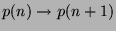

Usage
import from LinearOrdinaryRecurrence(R, Rx);
import from LinearOrdinaryRecurrence(R, Rx, E);
| Parameter | Type | Description |
|---|---|---|
| R | Ring | A ring |
| Rx | UnivariatePolynomialCategory R | A polynomial ring over R |
| E | Symbol | The variable name (optional) |
Description
LinearOrdinaryRecurrence(R, Rx, E) implements linear ordinary difference operators with coefficients in Rx and shift .
Exports
LinearOrdinaryRecurrenceCategory Rx